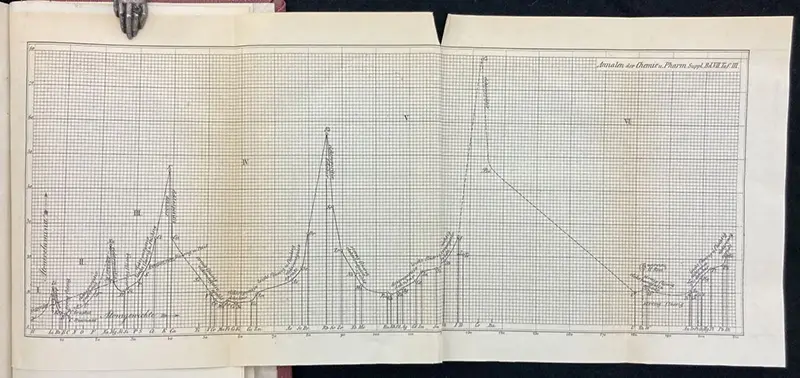
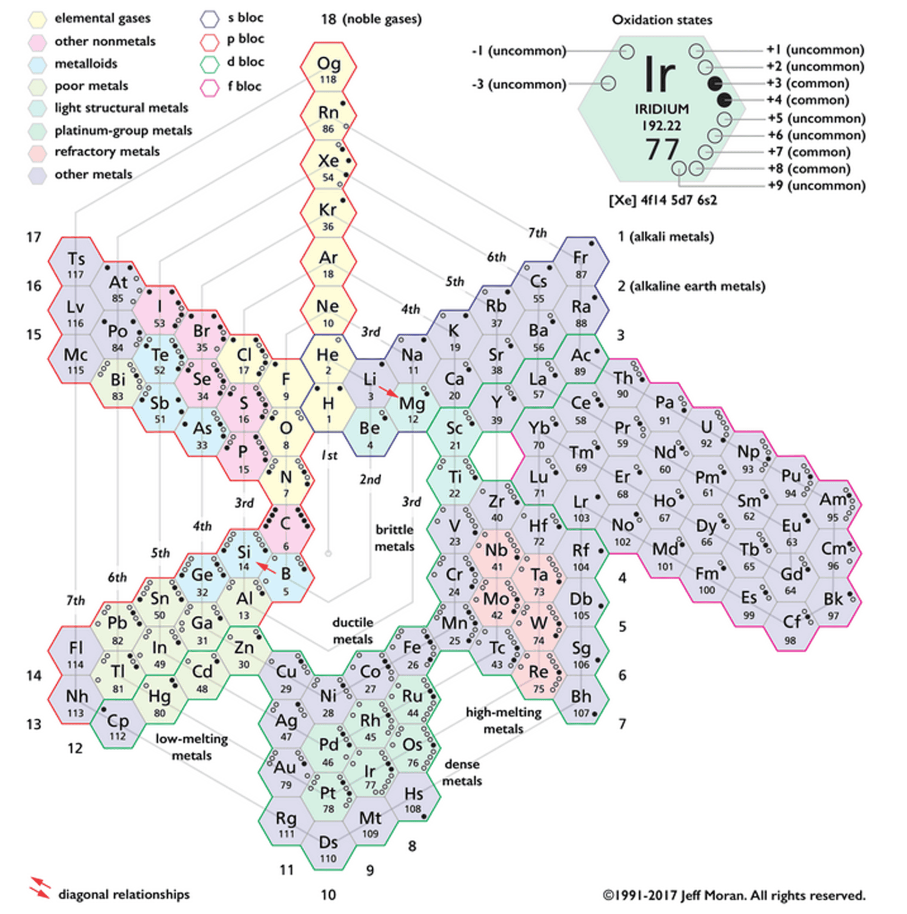

The Periodic Spiral
The periodic table is one of the most successful data visualisations ever made, displayed on millions of classroom walls around the world.
Its underlying data is essentially just a one-dimensional list: the elements sorted by atomic number, 1 to 118.
Turning this list into a “table” involves a layout choice. Although one version has become canonical over the past 150 years, there are many alternative possible designs. What makes this version special?
All code runs in your browser. The first cell may take a few seconds while Python loads.
1 · Atoms and electron shells
An element is defined by one number: Z, the count of protons in the nucleus (e.g. carbon is “element six”).
A neutral atom carries Z electrons. These electrons stack into shells around the nucleus that hold at most \(2n^2\) electrons: 2, 8, 18, 32.
Chemical behaviour is governed mainly by the valence electrons: electrons in the outermost shell and, for transition metals, electrons in a nearby incompletely filled d sub-shell. Similar valence arrangements tend to produce similar chemistry.
The data for this page is one row per element: number, symbol, name, and a few other element properties.
Shells, sub-shells and orbitals
A shell is split into sub-shells, and a sub-shell is split into orbitals. These represent electron states allowed by quantum mechanics.
Within shell \(n\), the sub-shell quantum number \(l\) can take the values from 0 to \(n-1\). The traditional labels s, p, d and f mean \(l=0,1,2,3\). A sub-shell has \(2l+1\) orbitals (so s has 1, p has 3, d has 5, f has 7), and the Pauli exclusion principle permits two electrons of opposite spin in each orbital, giving sub-shell capacities of 2, 6, 10 and 14 electrons.
The first shell contains only a 1s sub-shell. The second contains 2s and 2p; the third contains 3s, 3p and 3d; and the fourth adds 4f. In notation such as \(3p^5\), the 3 names the shell, p names the sub-shell, and the superscript means that five electrons occupy it (the letters are traditional names from spectroscopy).
Shells fill in a fixed order (the aufbau order). Carefully review how the functions translate an atomic number into a sub-shell configuration and then totals for each shell. We will compare lithium, carbon, neon and sodium: the beginning, middle and end of the second shell, followed by the first electron in the third shell.
Draw all four with the same function and the same spatial scale:
2 · Periodicity
As Z is increased, the outer shell fills, closes, and starts again:
Closed shells (red, 8 outer electrons except helium’s 2) and fresh starts (teal, 1 outer electron) recur all the way to Z = 118. The long flat stretches at 2 between the teeth are the transition metals and the lanthanide and actinide series, where electrons fill inner subshells while the outermost shell holds steady. The sequence closes a shell and begins again. This “sawtooth” is the periodic law.
Eighteen Groups
The sawtooth “teeth” have lengths 2, 8, 8, 18, 18, 32 and 32. Look closely at period 4, the first long one, to see where the standard table’s famous 18 columns come from. After argon closes period 3, the next electrons are added in three consecutive runs:
| elements | sub-shell being filled | number of available electron places |
|---|---|---|
| potassium–calcium | 4s | 2 |
| scandium–zinc | 3d | 10 |
| gallium–krypton | 4p | 6 |
Period 4 therefore contains \(2 + 10 + 6 = 18\) elements. Draw that sequence as one row:
When the standard table stacks each period as a row, these runs become the blocks.
The two elements of the s run form a two-column s-block.
The ten elements of the d run a ten-column d-block, and the six of the p run a six-column p-block.
The columns then form \(2 + 10 + 6 = 18\) vertical groups, numbered 1–2 (s), 3–12 (d) and 13–18 (p).
The table has 18 groups essentially because period four establishes 18 recurring positions.
The numbers 1–18 are the standardised group labels. Six numbered groups also have IUPAC-approved collective names that chemists commonly use:
| group | IUPAC-approved collective name | examples |
|---|---|---|
| 1 | alkali metals | Li, Na, K |
| 2 | alkaline earth metals | Be, Mg, Ca |
| 15 | pnictogens | N, P, As |
| 16 | chalcogens | O, S, Se |
| 17 | halogens | F, Cl, Br |
| 18 | noble gases | He, Ne, Ar |
The other columns do not have IUPAC-approved collective names. They can be described using their first element (e.g. the titanium group for group 4, the boron group for group 13 and the carbon group for group 14). These are descriptive labels rather than standardised categories.
Hydrogen sits in group 1 by electron configuration, but it is not an alkali metal. The lanthanoids and actinoids are also IUPAC-approved collective names, but those two sequences are not numbered groups (see below).
Size of atoms
The data column radius holds each element’s covalent radius in picometres. Plot radius against Z for all 118 elements, joined by a faint line, and highlight the alkali metals (Z = 3, 11, 19, 37, 55, 87) in one colour and the noble gases (Z = 2, 10, 18, 36, 54, 86) in another.
What does the pattern do at each shell closure?
Hint 1. Three layers: a faint ax.plot(Z, radius, ...) line, an ax.scatter of all the points, then two more scatters for the highlighted sets. radius[z - 1] is the radius of element z.
Hint 2. For the highlights, loop for z in ALKALI: ax.scatter([z], [radius[z - 1]], ...), and add ax.annotate(symbol[z - 1], ...) if you want labels.
Fully worked solution:
ALKALI = (3, 11, 19, 37, 55, 87)
NOBLE = (2, 10, 18, 36, 54, 86)
fig, ax = plt.subplots(figsize=(9.5, 4.6))
ax.plot(Z, radius, "-", color="#cccccc", lw=1)
ax.scatter(Z, radius, s=14, color="#666666", zorder=3)
for z in ALKALI:
ax.scatter([z], [radius[z - 1]], s=55, color="#4269d0", zorder=4)
ax.annotate(" " + symbol[z - 1], (z, radius[z - 1]), fontsize=9,
color="#4269d0")
for z in NOBLE:
ax.scatter([z], [radius[z - 1]], s=55, color="#e66852", zorder=4)
ax.set_xlabel("atomic number Z")
ax.set_ylabel("covalent radius (pm)")
ax.set_title("Atomic size is periodic: peaks at the alkali metals")
plt.show()Across each period atoms shrink (the growing nuclear charge pulls the same shell tighter). At each new shell the size jumps: argon is 96 pm, and one proton later potassium is 196 pm. The sawtooth pattern is the same cycle Lothar Meyer plotted as atomic volume in 1870.

Lanthanoids and Actinoids
Return to the graph of electrons in the outermost shell. Its early teeth are short, but the later teeth contain long, flat stretches at two outer-shell electrons. Atomic number is still increasing along those stretches: the added electrons are entering an inner d or f sub-shell, so the count in the outermost shell does not change.
The sub-shell capacities explain the three different period lengths:
- Periods 2 and 3 fill an s run and a p run: \(2 + 6 = 8\) elements.
- Periods 4 and 5 insert a d-filling run between them: \(2 + 10 + 6 = 18\) elements.
- Periods 6 and 7 also insert an f-filling run: \(2 + 14 + 10 + 6 = 32\) elements.
Those 10- and 14-element insertions are the long, flat parts of the graph. They also create the central design problem faced by every periodic-table layout: later cycles contain many more elements than the early cycles. In periods 6 and 7, after the first two s-filling positions, electrons begin filling an f sub-shell before the d- and p-filling runs resume.
A fully expanded table can show each period as one continuous 32-position row. The familiar compact table instead keeps its main grid 18 columns wide, It removes the f-filling sequence from between the first two columns and the d-block and prints that continuation underneath (Lanthanides and Actinides).
A continuous spiral cannot remove the 14 inserted positions: its path must pass through them. A simple spiral can squeeze more elements around the same turn, but then equivalent groups no longer line up from one turn to the next. A spiral that preserves that alignment must give the extra path somewhere to go.
The familiar gap between beryllium (element 4) and boron (element 5) is another consequence of the same unequal period lengths. Periods 2 and 3 contain no d-filling run, so the compact table leaves empty layout space between their s- and p-filling elements.
3 · Alternative designs
If the data is a cycle, should its picture be a grid, or should it spiral round and round? Chemists have proposed various layouts. Compare these six alternative designs.
As you compare them, track what each design does with the longer d- and f-filling runs visible in the outer-electron graph. An element’s block (s, p, d or f) names the kind of sub-shell receiving its distinguishing electron. In the standard layout, the s-block occupies columns 1 and 2, the d-block occupies columns 3–12, the p-block occupies columns 13–18, and the f-block is displayed in the two detached continuation rows.
Mendeleev’s own table (1869). Periods run down the columns. Groups run across the rows, transposed from the modern convention. Gaps are deliberately left for elements Mendeleev predicted must exist (gallium, scandium, germanium).
Blocks are not represented as the table predates the discovery of the electron by nearly three decades. Rows collect elements by valence and chemical similarity, which mixes the future blocks together: boron and aluminium (p-block) share their row with the predicted eka-boron, which turned out to be scandium (d-block).

Benfey’s spiral (1964). The list winds continuously outward from hydrogen.
Blocks are represented by topology. The s- and p-blocks stay on the compact central winding, where the groups line up as rays. The d-block leaves the spiral after the alkaline earths as a bulging peninsula labelled “transition metals”; the f-block is a second, farther-out peninsula. The design even reserves an empty third arm, the “superactinides”, for a predicted g-block that no synthesised element has yet reached.

Janet’s left-step table (1928). Rows end where shells actually close in the aufbau order, so the blocks form perfect staircase steps.
Blocks are the layout’s organising principle. The table is exactly four contiguous rectangles, f (14 columns), d (10), p (6) and s (2), placed left to right in that order; the column brackets in the image label them directly. Each row is one step of the aufbau order and always ends in the s rectangle. No other design, the standard table included, renders each block as a single perfect rectangle.

A circular table. Periodicity explicitly represented with concentric rings.
Blocks are not encoded. Rings are periods, and colour repeats the ring, so block membership must be inferred from angular position exactly as it is inferred from column position in the standard table. The d-block elements are simply the extra sectors that widen rings four to seven. The one block the design does make visible is the f-block, represented in detached arcs outside the circle, the same move as the standard table’s footnote rows.

Jeff Moran’s hexagonal spiral (1999). Hydrogen sits at the centre rather than at one end of a row. The connected hexagons make the sequence continuous, while colour, outlines and annotations expose blocks, metal categories, diagonal relationships and oxidation states.
Blocks are a dedicated visual channel. The spiral scatters each block across the plane, so position cannot carry the information; instead each hexagon’s outline colour encodes its block (the legend’s “s bloc”, “p bloc”, “d bloc”, “f bloc”), while the fill colour independently encodes metal category.

James Franklin Hyde’s curled-ribbon table (1975). Hyde was an organosilicon chemist, and his arrangement gives carbon and silicon the centre of the composition. A continuous ribbon curls around them, replacing the standard table’s separated rows with one connected path.
Blocks are separate whorls of the one ribbon, each labelled with its electron configuration. The s- and p-block elements spiral around the carbon-silicon centre; the d-block is the entire left lobe of the figure-eight; the f-block is the detached double loop at the top.

{kind=link}
What are their advantages and disadvantages? Which version do you prefer, and why?
Look beyond these six examples and find at least one other periodic table design. Consider what the layout makes easier to see and what it makes harder to see. Be precise about what position, shape, colour and any third spatial dimension encode.
4 · Build the spiral
The spiral’s claim is that the element list is a cycle with no breaks.
Giving every period one full turn, an element’s angle is its fraction of the way through its period, and its radius grows steadily outward.
So sodium, the 1st of 8 elements in period 3, sits at \(\tfrac{1}{8}\) of a turn (45°).
Potassium, the 1st of 18 in period 4, sits at \(\tfrac{1}{18}\) of a turn (20°): same group, different angle.
Only the end of a period means the same thing in every period, so shell closures should align. We can colour by block (which kind of sub-shell is filling) to see four “districts” of elements:
The sequence is unbroken, the blocks appear as coloured arcs, and every shell closure lands at the same angle, so the noble gases (Group 18) line up on a single ray.
However, as the sodium and potassium angles showed, no other group lines up. This is a weakness. Chemists constantly reason “down a group”, and the spiral makes that vertical scan impossible.
A smooth spiral cannot avoid this: a turn must hold 2, 8, 18 or 32 elements, so groups will be misaligned unless corrections to the angles are made.
To make that correction, give each of the 18 numbered groups one fixed angle. The elements in the two detached sequences have no group number in our data, so squeeze each 15-element sequence into the small angular sector between groups 2 and 3. Keep the same radial progression as before:
Lithium, sodium and potassium now lie on one ray, as do the other numbered groups. The groups are aligned, but at the cost of the shorter periods leaving large empty angular gaps, while the lanthanides and actinides are compressed into a narrow wedge.
This is why other spiral designs introduce bulges (or “peninsulas”) for these elements. Can you think of other ways that this problem could be addressed?
5 · Build the canonical table
Start again with the elements as a one-dimensional sequence. Cut the sequence after every closed shell. Each resulting segment is a period, and the periods contain 2, 8, 8, 18, 18, 32 and 32 elements. Place each period on a new row. The remaining design decision is where each element should sit horizontally.
The standard table shifts the shorter rows sideways so recurring valence configurations and chemical behaviour line up vertically: rows are periods and columns are groups.
The group field in our data records those conventional horizontal positions. Use it to place the first 18 elements:
The first period has two elements; the second and third have eight each. The chart nevertheless reserves 18 horizontal positions, because (as Section 2 showed), period 4’s three filling runs (4s, 3d, 4p) establish 18 recurring positions. So lithium, sodium and potassium all begin an s sub-shell and align in group 1, while boron, aluminium and gallium begin a p sub-shell and align in group 13. Periods 2 and 3 contain no d-filling run, which is why beryllium sits in position 2 and boron in position 13. Positions 3–12 between them stay empty; this gap is the space reserved for the d-block.
Create the standard periodic table from the data
Build the full canonical table, all 118 elements. You have Z, symbol, period, group and category (plus cat_colours, the conventional colour for each category). The table will include:
- Main grid: elements with a
groupgo at columngroup, rowperiod, exactly like the 18-element version. - The f-block: the lanthanides (Z 57–71) and actinides (Z 89–103) have
group = None. The canonical design exiles them to two footnote rows below the table. Place them there (15 per row) and choose the rows’ vertical position yourself.
Colour every cell by its category, put the symbol (and, if you like, Z) in each cell, and add a legend.
Hint 1. cell_position has three cases: a real group (use it with period directly), a lanthanide (57 ≤ Z ≤ 71), and an actinide. The footnote rows need y values below row 7; leave a blank row as a visual separator.
Hint 2. Within a footnote row the column should step with Z: something of the shape constant + (Z[i] - 57) spreads the fifteen lanthanides across fifteen consecutive columns. Pick the constant so they sit roughly under the middle of the table.
Review. Compare your result next to any printed periodic table: you should count 18 columns, 7 main rows, and two footnote rows of 15; hydrogen alone at top-left, helium at top-right above the noble-gas column, and the colour regions forming solid blocks.
You do not need to submit your period table; instead submit the alternative design (different from the six included here) that you found for Section 3.
6 · Why this became the standard table
The canonical table has become favored over the spiral designs for a few reasons:
- It aligns the most-used comparison. Chemists constantly reason “down a group”: same outer shell, similar reaction behaviour. The grid makes that a straight vertical scan.
- It is rectangular. It fits pages, posters, screens and blackboards; every cell has room for symbol, number, and mass. Most spiral designs cramp inner turns and waste space on outer turns.
- Gaps are informative. Empty grid cells can be used to make legible predictions.
- Familiarity. After a century on every classroom wall, the standard layout is the one everyone can already recognise.
Just because this visualisation of the elements “won” does not mean it is “true”. Different representations show some relationships while hiding others. Every layout is an argument about what matters, and opinions on the what makes one version the “best” version continue to differ.
Sources
elements.csvis generated from the mendeleev Python package (v1.2): IUPAC groups and periods, Pyykkö covalent radii (all 118 elements, one consistent convention), Pauling electronegativities. The f-block rows carry no group number, following the common 18-column convention.- The
configuration()function implements the idealised Madelung (aufbau) rule and ignores the ~20 real-world exceptions (Cr, Cu, Nb, …); none of them change where any element sits in the table. - Images, all from Wikimedia Commons: Mendeleev’s 1869 table (redrawn by NikNaks, public domain); Benfey-style element spiral by DePiep (CC BY-SA 3.0); left-step table by Sandbh (CC BY-SA 4.0); circular table by Cbuckley (CC BY 3.0); and James Franklin Hyde’s curled-ribbon table, reproduced by Rezmason (CC BY-SA 4.0). Jeff Moran’s hexagonal table is credited to Moran and sourced from Laboratory News.
- Category colours follow the long-standing Wikipedia convention, used here deliberately: this page is about the canonical design, and its colours are part of the canon. Note they are not a colour-blind-safe palette; the table survives that because position and text labels, not colour, carry the structure (worth noticing as a design lesson in itself).